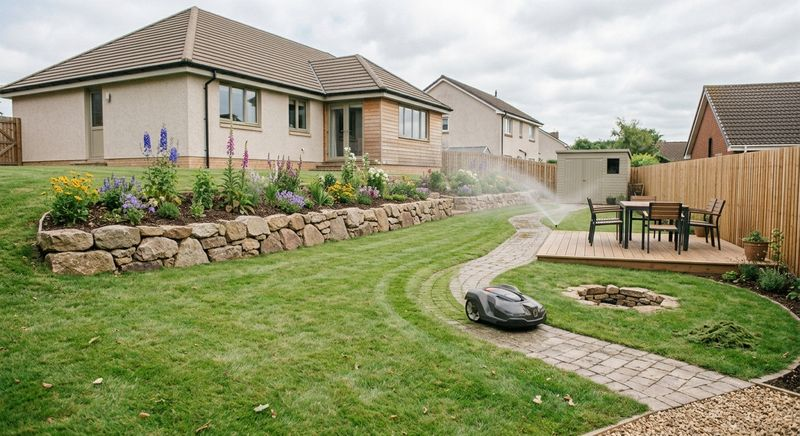
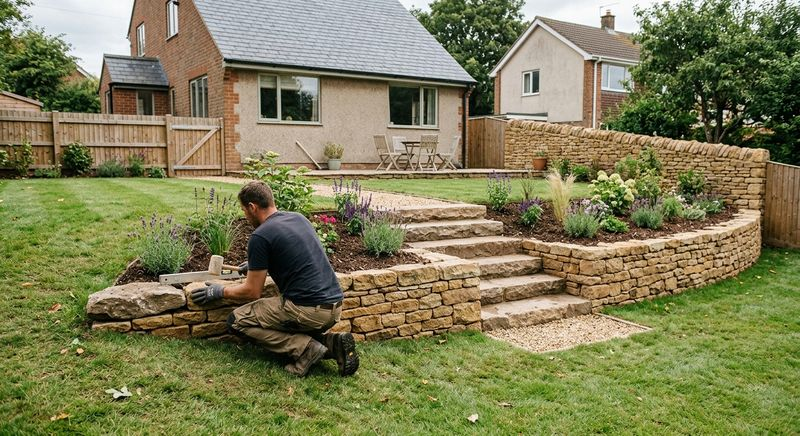
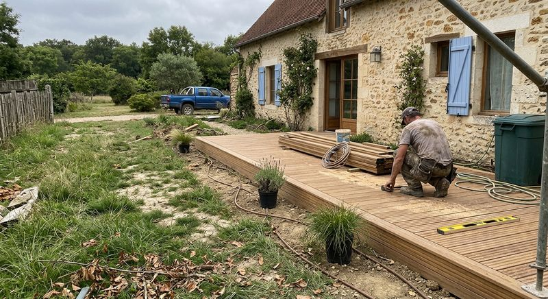

Création d’espaces verts
Plantations, massifs et aménagement du jardin selon votre projet.
Création, aménagement et entretien d’espaces verts, pour votre jardin.



Choisissez le domaine qui correspond à votre projet, ou décrivez-nous votre besoin.
Plantations, massifs et aménagement du jardin selon votre projet.

Pose de terrasses en bois et d’allées en pavés ou dallées.
Tonte de pelouse, débroussaillage et entretien régulier du jardin.
Murets, escaliers et ouvrages en pierre intégrés au jardin.
Décrivez votre besoin, puis appelez l’entreprise ou écrivez-nous.
© D&F Paysages · Brunoy (91) · Maquette de démonstration